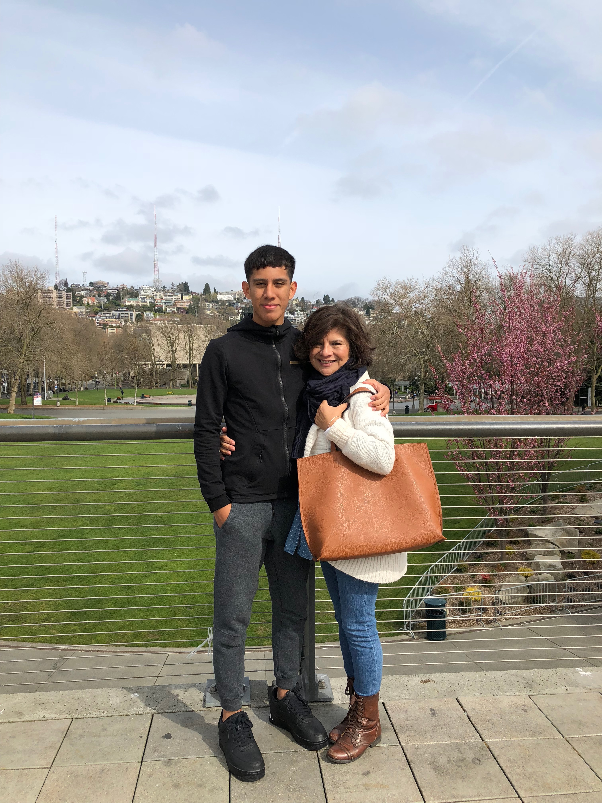

My life has been filled with so many wonderful moments and opportunities that I am grateful for everyday. Although there has been many highs there is an equal amount of lows that have occured in my life. I am an only son. Most people think this may be a good thing, but I honestly sometimes have never thought this is the case. Being an only son is a great thing but what people don't know is that it comes with a lot of loneliness. What has kept me from this loneliness is my deep connection with a sport that I discovered at a young age. Coming from a family that is split with success and failures, it becomes difficult to find the path that calls to me. At times in my life there has been persuasions into going down the wrong path. But the sport of soccer has given me everything I could have possibly asked for.
There is so much that I have not experienced, I am still young. I have time too still understand myself for who I really am as a person. With the help of my parents I am on the right path to succeed in life and be able to obtain a college education. I am so thankful for this because there are alot of people in the world who would love to be in the position that I am in. God has a plan for my success in this world and I can't wait to see what's in store for my life.
Both my parents have been a huge part of my life I would not be in the position I am to day if it was not for them. They both motivate me daily to succed in school and on the pitch. My Father ran track collegently at Cal State Los Angeles. I am lucky enough to be trained by him daily to improve in my sport. As for my Mother her story is just amazing, coming from South Central LA at a time where there was much chaos. She was able to make it out of many difficult situations to become a very strong independent women. She has achived many things working at Walt Disney, living in a foreign country, speaking multiple languages, working at many restaurants as a su chef and chef, working 10 years at Williams-Sonoma and now becoming a district sales manager at a corporation call Viking Range.
